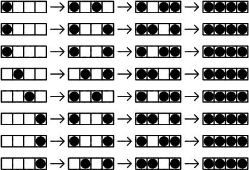

Project Euler 364
题目
Comfortable distance
There are \(N\) seats in a row. \(N\) people come after each other to fill the seats according to the following rules:
- If there is any seat whose adjacent seat(s) are not occupied take such a seat.
- If there is no such seat and there is any seat for which only one adjacent seat is occupied take such a seat.
- Otherwise take one of the remaining available seats.
Let \(T(N)\) be the number of possibilities that \(N\) seats are occupied by \(N\) people with the given rules. The following figure shows \(T(4)=8\).

We can verify that \(T(10) = 61632\) and \(T(1 000) \mod 100 000 007 = 47255094\).
Find \(T(1 000 000) \mod 100 000 007\).
解决方案
题目中的第\(1\)轮的占座位过程完成后，相邻的两个被占座位距离要么间隔\(1\)个空座位，要么间隔\(2\)个空座位。我们考虑第\(1\)步占座完成后的情形。
由于第\(1\)个座位和第\(n\)个空座位比较特殊，因此首先进行考虑。在第\(1\)轮完成后，要么第\(1\)座位占了，要么第\(2\)个座位被占了；同理，要么第\(n\)个座位被占了，要么第\(n-1\)个座位被占了。
假设\(h\in\{0,1,2\}\)是第一轮结束后，第\(1\)个和第\(n\)个是空座位的个数，这\(h\)个座位将在第\(2\)轮占座位过程中被占用。排除这一特殊的部分后，假设\(m\)是长度\(1\)的空隙数，\(k\)是长度\(2\)的空隙数，那么\(n,m,h,k\)就满足这个关系：\(m+2k+(m+k+1)=n-h\)，化简后，得到\(m=\dfrac{n-h-1-3k}{2}\)。
固定\(h\)后，枚举\(k\)，枚举过程需要检验\(k\)以保证\(m\)计算出来后是一个整数。假设\(f(n,h)\)为考虑好特殊的\(h\)个座位后，不同的入座顺序后，那么\(f(n,h)\)可以写成：
\[f(n,h)=\sum_{2m+3k=n-h-1} C_{m+k}^m\cdot (m+k+1)!\cdot(k+h)!\cdot 2^{k}\cdot(k+m)!\]
枚举给定的\(k\)后，中间的\(m\)个\(1\)空隙和\(k\)个\(2\)空隙不同的安排顺序有\(C_{m+k}^{m}\)种；接下来第\(1\)轮占座的人对\((m+k+1)\)个间隔进行占座，有\((m+k+1)!\)种方式，第\(1\)轮结束后，一排座位被切分成多个空隙；第\(2\)轮将对\(2\)空隙和\(h\)个座位进行占用，但是\(2\)空隙在第\(2\)轮只能占用一个，因此有\((k+h)!\cdot2^k\)种；第\(3\)轮则将第\(2\)轮中\(2\)空隙的另一个位置和\(1\)空隙全部占满，一共有\((k+m)!\)种。
最终\(T(n)=f(n,0)+2f(n,1)+f(n,2)\).
为了方便求模\(p\)中\(1\sim N\)的逆元，有一种线性求出这些值的逆元的方法：假设目前要求\(i\)的逆元\(i^{-1}\%p\)，那么
设\(q=\lfloor\dfrac{p}{i}\rfloor,r=p\%i\)，那么可以写成\(p=qi+r\)，也就是\(qi+r\equiv 0(\mod p)\)，即\(r\equiv -qi(\mod p)\).
两边同时除以\(ir\)，那么有\(i^{-1}\equiv -q\cdot r^{-1}(\mod p)\).
最终将\(q=\lfloor\dfrac{p}{i}\rfloor,r=p\%i\)回代到上式，那么得到\(i^{-1}\equiv-\lfloor\dfrac{p}{i}\rfloor\cdot(p\%i)^{-1}(\mod p)\).
因此，将\(i\)从\(1\)到\(N\)按顺序求解即得到逆元。
将前一部分数在OEIS中查询，结果为A192008。
代码
1 |
|